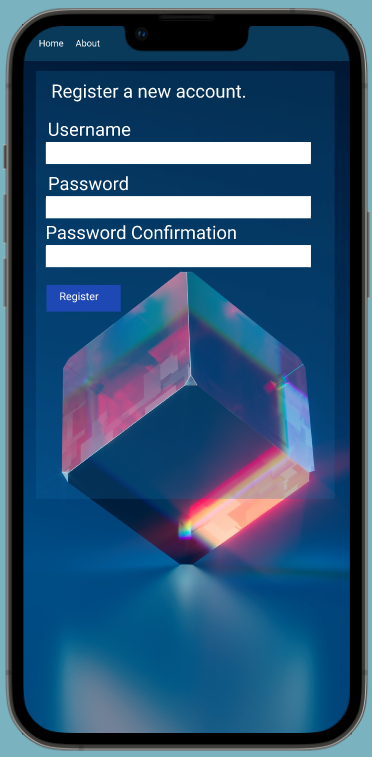
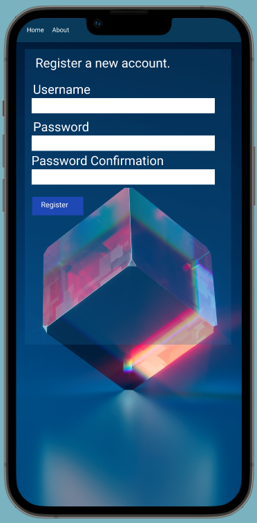

The Omni Logger App

A community based E-Journal web app that tracks all users activity and presents it in graphs that is designed for mobile and desktop. Check it out live now hosted through Heroku: The Omni Logger
What is The Omni Logger?
The Omni Logger is a community based electronic journal app. The Omni Logger is an app built to allow users to see what other users are up to on the app via a Community Board page. Users can share their topics, entries, workouts, and workout routines to the CBP for other users to draw inspiration, motivation, and great ideas from.
The problem to solve?
To get users to be more active in a healthier social media context. What The Omni Logger app tries to solve is combining common social media app features with a health minded twist.
The Design Process

1. Think
This app first started out as a basic project from the book, Python Crash Course, 2nd Edition: A Hands-On, Project-Based Introduction to Programming 2nd Edition by Eric Matthes, and I developed it into a social media style app where users can view other users topics, entries, workouts, workout decks, and nutrition calculator facts by navigating to a Community page. If users wish to they can join the community with a click of a button or stay private, the choice is up to the user.

App Features
After the design was done the next step was to conduct research on what features users would want in the app. Seeking user research information I turned to my coworkers at the grocery store and interviewed them. Each coworker was gracious enough to let me conduct the interviews during their 30 min lunches and gave me enough information to move on to the next step.
Create Topics & Entries
Users can create topics of interest and post entries about the topic.
Graphs
Users can track their data based off their activity with the app through various graphs.
Create Workout Cards & Workout Decks
Create customizable workout cards that users can then combine into a deck or known as a workout routine.
Start a Workout
Once a user has a workout deck created they can start their workout. A simple interface just showing each workout card in the deck and a basic timer.
Timer
A very simple timer with a start, stop, and reset functionality. This helps the user track how long their workouts are.
Community Board Page
Users are able to turn on a public setting that allows them to post their topics, entries, workout cards, and workout decks to a public page for other Omni users to check out.

Low-wireframe sketches
Now that the research and build features are done I can move onto sketching out by hand the wireframes. This step of the design process really helps me save time by mapping out before hand the layout of the app
With the Omni Logger app, I created over 50 sketches. Most of the sketches were too complex or confusing so a lot of the design changed throughout this stage of the design process but I was able to come to a simple user friendly design.
Hand sketching every project gives me a better understanding of what the user is needing/wanting before I get too far into the project.
2. Make
Wireframes


Mockups
 

The Prototype
3. Check
User reactions & test feedback
A very crucial stage in the design process as I was able to learn a lot more about my users edge cases and pain points. This allowed me to go back to the drawing board and add in the updated information to make the app more accessible. Some features that were suggested to be added were: language translator, magnifying glass for text, and different themes.
Coding those features will take longer to build the app but they are very important to the users and should be added in by final product launch.
Interviews conducted
12
Average rating of app
8/10
Conclusion
I would say overall this was a great project as I was able to combine my UX design skills and turn that design from an idea to reality by coding a fully functioning Django web app. The Omni Logger is still live, hosted on Heroku.
You can find it here: The Omni Logger
Total number of users
12
Number of active users
12